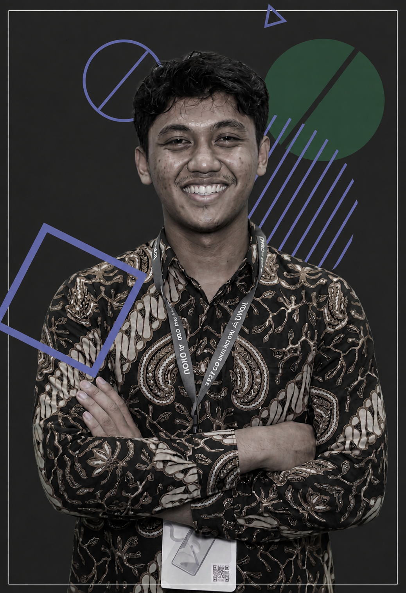

Hi, I'm Satria Fadhillah
Cyber Security Student
Building Secure Digital Solutions.
Passionate about cybersecurity, networking, cloud technologies, and software development. I enjoy building secure systems, sharing technical knowledge, and continuously exploring emerging technologies.

Satria Fadhillah
Cyber Security Student
About Me
Technology is more than just my field of study it's my passion. As a Cyber Security Engineering student at Politeknik Negeri Cilacap, I explore cybersecurity, networking, cloud technologies, software development, and AI through projects and continuous learning. I also enjoy sharing technical knowledge through writing while constantly growing as a future technology professional.
Education
Cyber Security Engineering
Politeknik Negeri Cilacap, 2024 - Present
Current Goal
Building expertise in web penetration testing, network security, and secure web development to identify vulnerabilities, strengthen system security, and create resilient digital solutions.
Motivations
Skills & Interests
-
Web Application Security -
Network Administrator -
Secure Web Development -
Vulnerability Assessment -
Prompt Hacking
Skills & Technologies
Technologies, security tools, and platforms I use to build, secure, and analyze digital systems.
Cyber Security
Networking
Exploring Technology
Experiences
Network Infrastructure Administrator
SMK Al-Muhtadin
Supported network infrastructure development and optimization while gaining practical experience in network administration, monitoring, and troubleshooting.
Network Administrator
PT. Bina Satria Agung Perkasa
Supported network infrastructure operations by configuring network devices, monitoring performance, and troubleshooting connectivity issues to ensure reliable network services.
Information & Communication Staff
Cyber Student Community at Politeknik Negeri Cilacap
Created and managed community communications through announcements, documentation, and social media to support member engagement and information sharing.
My Learning
A collection of what I'm learning, exploring, and building as I continue to grow in cybersecurity and software development. From understanding security concepts to developing real-world applications, I believe every project is an opportunity to learn, experiment, and improve.
Social Media Web Application
A full-featured social media web application built with Laravel, integrating practical security features such as CAPTCHA verification, bot detection, activity logging, security headers, encrypted backups, and user access control.
Employee Data Management System
An Android-based employee management application designed to manage employee data efficiently through a modern interface, with REST API integration and secure authentication for controlled access.
Web-based Money Tracking System
A web-based application designed to help users manage personal finances by recording income and expenses, organizing transaction data, and visualizing financial information.
Let's Connect
Have a project in mind or just want to say hi? Reach out through any of your channels below.